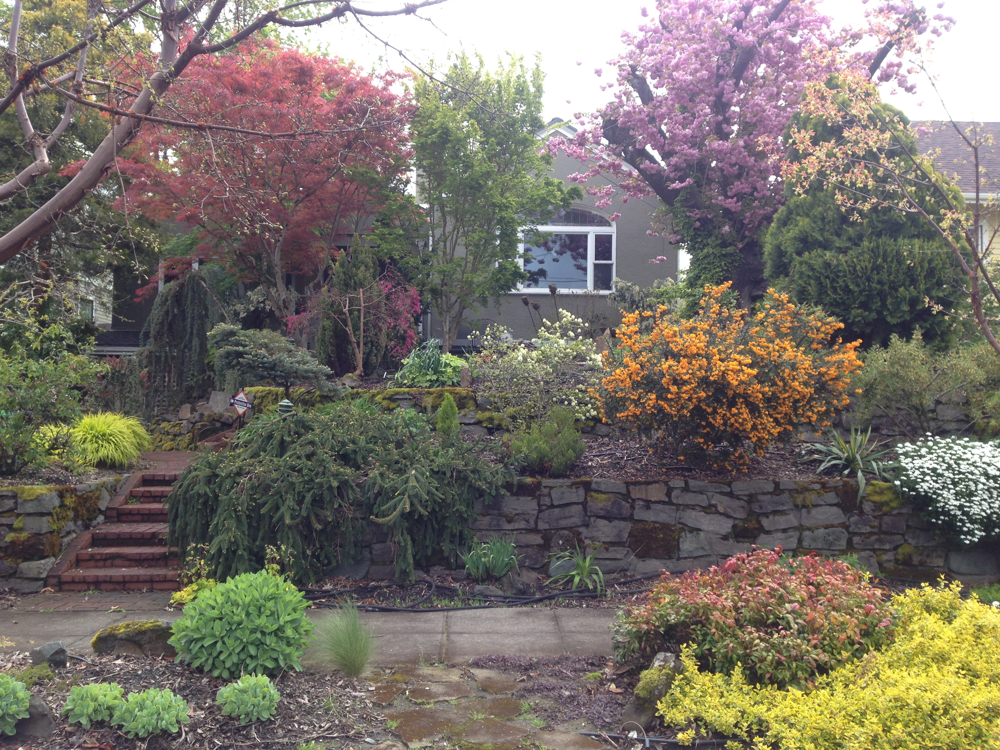

My Favorite Things!!!
I like some things more than others...Here are a few of my favorite things...
People
My family include:
- Emily
- Jess
- Leah
Things I like at Virginia Woof...
These are my three favorite things to do at doogie day care
- Mount other dogs (with consent)
- Play with puppies
- Get a new hair-do
Things I like to do in general...
These are just some things I like to do regularly
- Drive in automobiles
I get to drive in the car sometimes and I prefer to stick my head out of the passenger's window when possible to bark at other dogs. I also like putting my paw on the driver or the stick shift according my preferences at the time.
- Play with Pretty Boy Roy
Pretty boy is my friend from down the street. We like to mouth each other's faces and play tug of war with sticks.- Take a walk around my bucholic neighborhood
I really like going on walks and I'm generally pretty happy to sit on the corner before proceding into the crosswalk, unless it's raining. I get so excited when I see other dogs, that I bounce around and breath heavily. Mostly I just want to greet them. - Play with Pretty Boy Roy